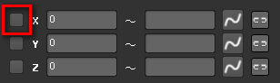
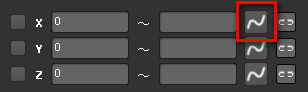
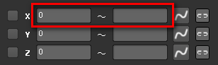
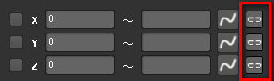
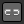
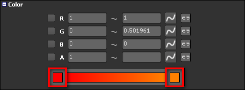
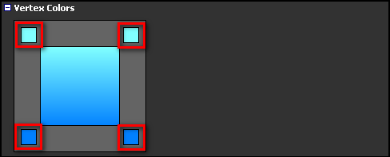

ノードのパラメータを編集する
編集したいノードを選択します。アトリビュートは Inspector ウィンドウに表示され、ここで編集することが出来ます。
キーフレームを打つ
パラメータの中にはキーフレームを打つことができるものがあります。
下図の赤枠で囲まれた部分をクリックすると、キーフレームを作成します。

| このパラメータにはキーフレームが存在しない。 | |
| カレントフレームにキーフレームが存在する。 | |
| 別のフレームにキーフレームが存在し、カレントフレームは補間されている。 |
キーフレームを編集する
アニメーションエディタを表示して、指定のパラメータを編集します。
下図の赤枠で囲まれた部分をクリックすると、アニメーションエディタを起動します。

| このパラメータにはキーフレームが存在しない。 | |
| キーフレームが存在する。 |
ランダムな値を設定する
一部のパラメータはランダムな値を設定することが出来ます。ランダムな値は下限値と上限値を設定し、下限～上限の間の値を生成します。
左側が下限、右側が上限です。ランダムな値を発生させない場合は、上限側に何も設定しないようにします。

ランダムな値を設定する（リンク）
生成するランダムな値を他のパラメータに適用させることができます。例えば、幅と高さに適用させ、アスペクト比を常に一定にすることが出来ます。
リンクさせた場合、上側のパラメータを使用します。例えば XYZ のうち、XY をリンクしたとき、X のパラメータを使用します。

|  | リンクしていない。 |
| リンクしている。 |
カラーを設定する
RGBAを直接入力する以外に、色を選択する方法があります。下図の赤枠の部分をクリックすると色選択画面が表示されます。
左クリックで Adobe Photoshop ライクなカラーピッカーを、右クリックで Windows のカラーピッカーを表示します。

頂点カラーを設定する
下図の赤枠の部分をクリックすると色選択画面が表示されます。
左クリックで Adobe Photoshop ライクなカラーピッカーを、右クリックで Windows のカラーピッカーを表示します。
また、Ctrl キーを押しながら左クリックすると、アルファ値を編集できます。
